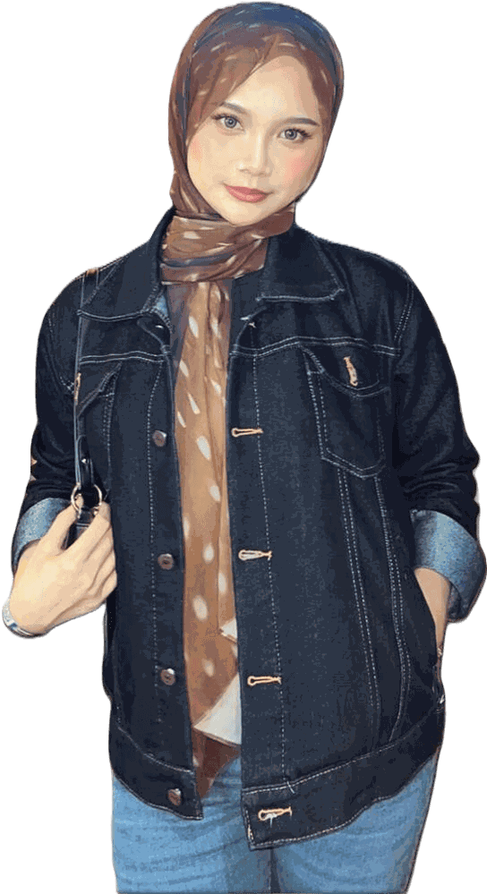
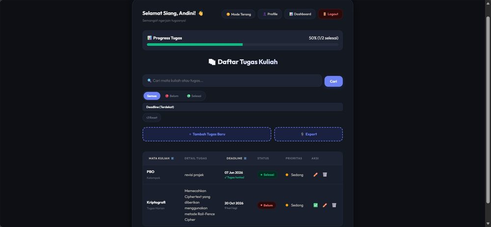
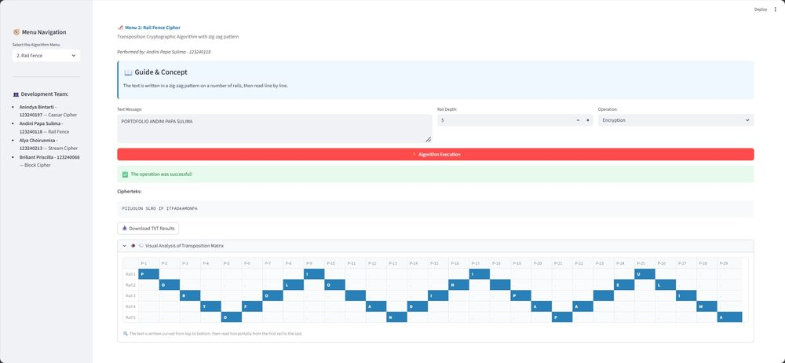
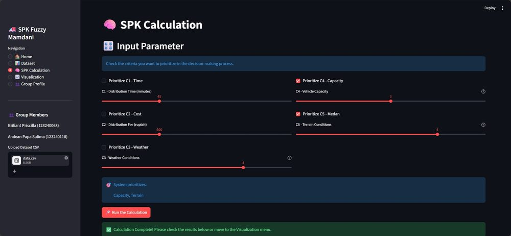
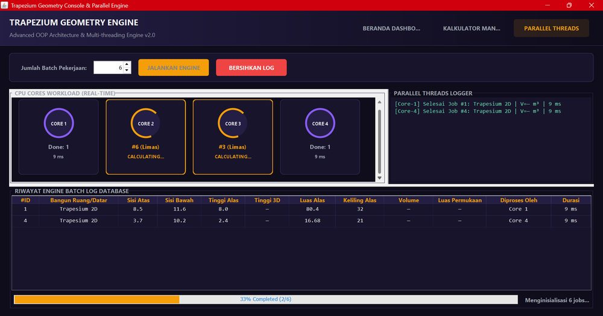
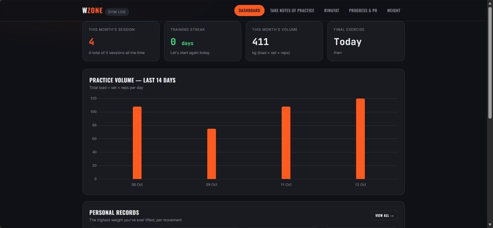

Aplikasi web
Sistem praktis untuk kuliah dan pengelolaan data, dengan perhatian pada antarmuka.
- PHP
- MySQL
- XAMPP
Andini Papa Sulima, mahasiswa Informatika di UPN “Veteran” Yogyakarta. Saya membangun aplikasi web dan desktop, lalu menyempurnakannya lewat masukan sampai jelas dipakai.

Tentang
Saya mahasiswa Informatika di UPN “Veteran” Yogyakarta. Karya saya biasanya berawal dari kebutuhan praktis, misalnya memantau tugas kuliah, lalu tumbuh lewat beberapa kali perbaikan kode dan tampilan.
Di luar kelas, saya aktif di organisasi dan kepanitiaan. Saya pernah mendampingi anggota baru dalam program kaderisasi dan kini bertugas di tim sponsorship festival nasional mahasiswa Informatika.
Fokus
Sistem praktis untuk kuliah dan pengelolaan data, dengan perhatian pada antarmuka.
Program Java berorientasi objek dengan threading dan antarmuka grafis.
Metode pendukung keputusan dan aplikasi interaktif yang menampilkan hasilnya dengan jelas.
Operasi citra dan cipher klasik yang diimplementasikan langkah demi langkah.
Alat & skill
Karya pilihan
Proyek lainnya ada di profil GitHub saya.

Aplikasi web untuk mencatat dan memantau tugas kuliah, dibangun di atas XAMPP dan disempurnakan lewat beberapa kali iterasi berdasarkan masukan.

Aplikasi Streamlit yang menggabungkan beberapa cipher klasik dalam satu antarmuka, termasuk mode super enkripsi.
Bagian saya: modul Rail Fence Cipher, serta perbaikan kode ganda dan sambungan super enkripsi ke Rail Fence.

Proyek sistem pendukung keputusan yang membandingkan dua metode, Fuzzy Mamdani dan Weighted Product, dengan antarmuka Streamlit dan notebook Jupyter.

Aplikasi desktop dengan antarmuka grafis yang ditulis dalam Java dengan struktur berorientasi objek.

Aplikasi web untuk mencatat latihan gym, memantau kemajuan beban dan personal record, serta berat badan. Dilengkapi dashboard dengan grafik volume 14 hari, estimasi 1RM, dan ekspor CSV.
Dibuat dari awal sampai akhir: login dengan password ter-hash, prepared statement, dan skema MySQL.
Rancangan website untuk melaporkan, mencari, dan mengklaim barang hilang di kampus, menggantikan info yang tersebar di grup WhatsApp. Fitur yang direncanakan: unggah foto, verifikasi admin, dan status barang.
Pengalaman
Tim sponsorship pada festival tingkat nasional untuk mahasiswa Informatika dari tiga kampus UPN “Veteran”.
Mendampingi anggota baru dalam program kaderisasi organisasi.
Semester 5, IPK 3.51 dari 4.00.
Sertifikat & pencapaian
Materi: dasar-dasar Gemini CLI dan demo sederhana, membangun website dan aplikasi praktis, serta tips sukses dan troubleshooting.
Lihat sertifikatKontak
Kirim pesan dan saya akan membalas secepatnya.